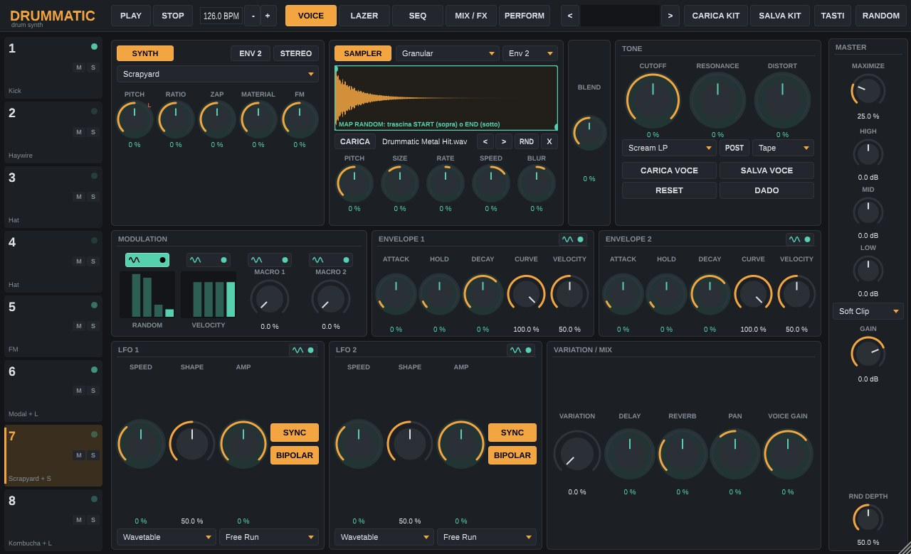
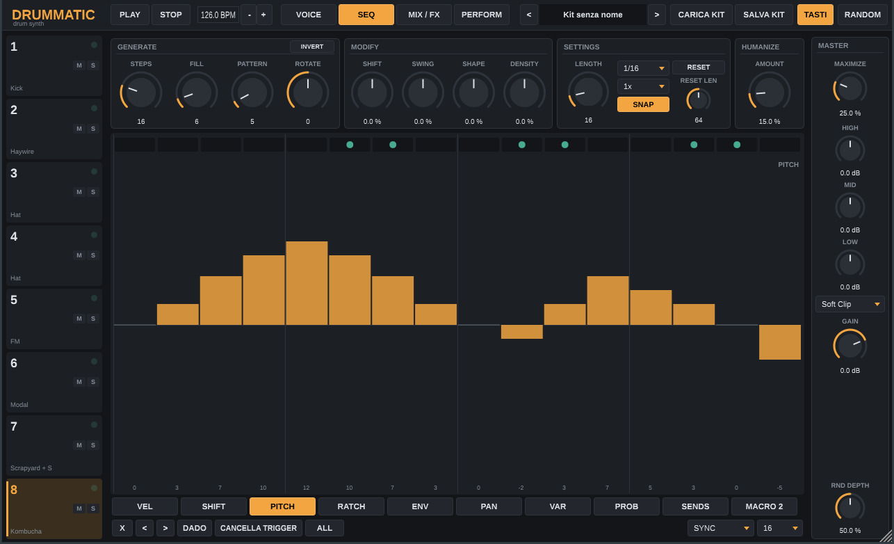
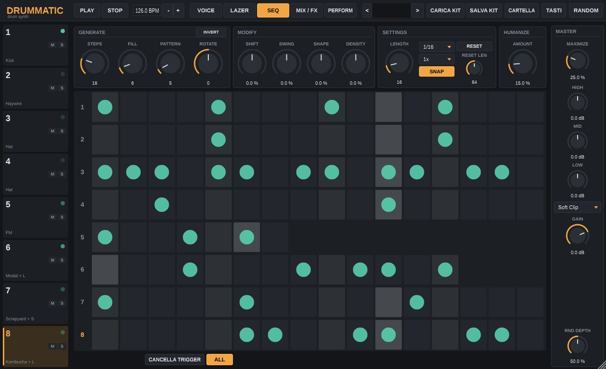
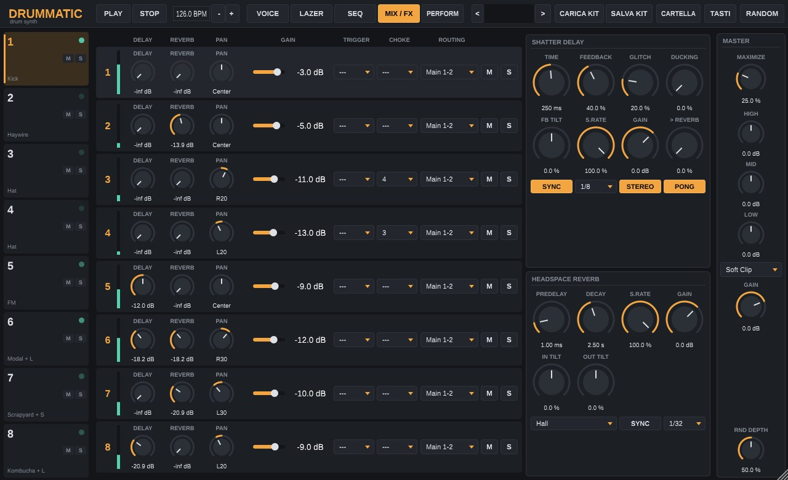
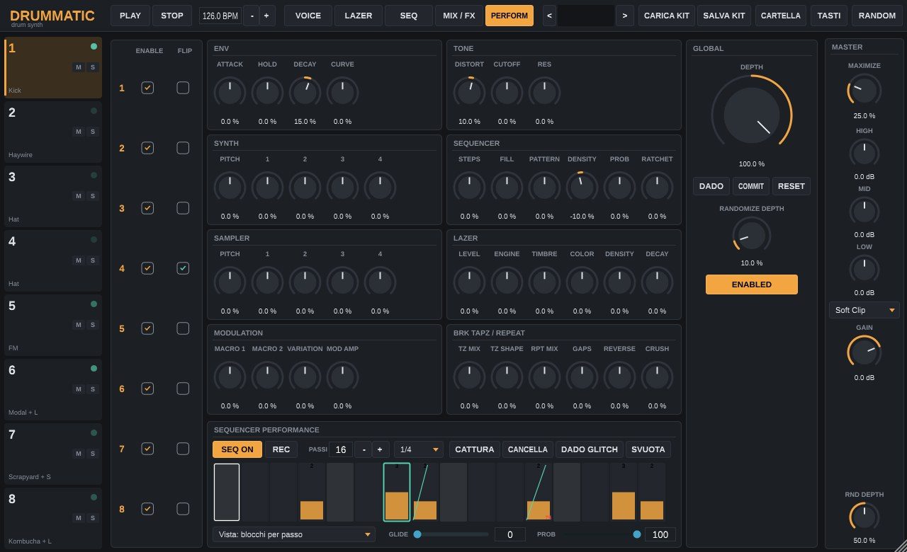

Versione 0.2.3 · ottobre 2026
Windows (standalone + VST3) · macOS (standalone + VST3, universale)
Emilio Falciatori
Indice
1Introduzione
2Installazione
3L'interfaccia
4La voce
Synth · Sampler · Blend · Tone · Modulazione · Inviluppi · LFO · Variation e Mix
5Il sequencer
6Il sampler in pratica
Pannello · Primi passi · Blend e inviluppo · START/END · Motori · Sequencer · Sei tecniche · MIDI
7Mixer, effetti e master
8Performance
9Kit, preset e randomizzazione
10Controllo MIDI e tastiera
11Risoluzione dei problemi
AAppendice: tabelle di riferimento e cronologia versioni
01
Introduzione
Cos'è Drummatic e come è organizzato
Drummatic è una drum machine ibrida a otto voci. Ogni voce unisce un sintetizzatore con 25 motori di sintesi, un campionatore con quattro motori di riproduzione, un filtro e una distorsione, un sistema di modulazione completo e un proprio sequencer euclideo. Le voci passano in un mixer con delay e riverbero in mandata e in un bus master con compressione, equalizzazione e clipping.
Drummatic funziona come applicazione standalone e come plugin VST3 per Ableton Live e gli altri DAW compatibili, su Windows e macOS. Lo stato completo (suoni, sequenze, modulazioni, campioni) viene salvato con il progetto del DAW.
Concetti chiave
Una voce, due sorgenti
Ogni voce ha un synth e un sampler. Il controllo BLEND decide quanto si sente di ciascuno: al centro entrambi suonano a pieno volume.
Modulazione a mappatura
Otto sorgenti (Random, Velocity, Macro 1–2, Env 1–2, LFO 1–2) si collegano a quasi ogni manopola: premi MAP su una sorgente e trascina le manopole.
Sequenze generative
Ogni voce ha un generatore euclideo con permutazioni, swing e curve di tempo, più dieci lane per passo con lunghezze indipendenti per poliritmi.
Controllo globale
La pagina Performance sposta insieme i parametri di tutte le voci; COMMIT scrive il risultato nelle voci quando ti piace.
Requisiti
Sistema
Formati
Note
Windows 10/11 64 bit
Drummatic.exe · Drummatic.vst3
Nessuna libreria aggiuntiva da installare.
macOS 10.13 o successivo
Drummatic.app · Drummatic.vst3
Binario universale: Apple Silicon e Intel.
DAW
VST3
Testato con Ableton Live 12. Ingresso MIDI e fino a 8 uscite stereo.
02
Installazione
Windows, macOS e prima configurazione
Windows
Estrai lo zip Drummatic-Windows.zip.
Plugin: copia la cartella Drummatic.vst3 in C:\Program Files\Common Files\VST3\.
Standalone: copia Drummatic.exe dove preferisci (per esempio sul desktop) e avvialo. Se compare l'avviso di Windows SmartScreen, scegli Ulteriori informazioni → Esegui comunque.
In Ableton apri Preferenze → Plug-in, verifica che Usa cartella di sistema VST3 sia attivo e premi Riesegui scansione.
macOS
Estrai lo zip Drummatic-macOS.zip.
Plugin: copia Drummatic.vst3 in ~/Library/Audio/Plug-Ins/VST3/ (nel Finder: Vai → Vai alla cartella…).
Standalone: trascina Drummatic.app in Applicazioni.
Il software non è notarizzato da Apple. Al primo avvio apri il Terminale ed esegui una volta: xattr -dr com.apple.quarantine ~/Library/Audio/Plug-Ins/VST3/Drummatic.vst3 /Applications/Drummatic.app
Riavvia Ableton o riesegui la scansione dei plug-in.
Prima configurazione dello standalone
Apri Options → Audio/MIDI Settings in alto a sinistra nella finestra e scegli scheda audio, frequenza di campionamento, dimensione del buffer e, se vuoi suonare Drummatic da una tastiera o da un controller, l'ingresso MIDI.
Latenza su WindowsLo standalone non include il driver ASIO. Per una latenza bassa scegli Windows Audio (Exclusive Mode), oppure usa il plugin VST3 dentro Ableton, che sfrutta il driver ASIO del DAW.
Dove vengono salvati i file
Contenuto
Cartella
Kit
Documenti/Drummatic/Kits · file .mkit
Preset di voce
Documenti/Drummatic/Voices · file .mvoice
Campioni
Documenti/Drummatic/Samples (cartella predefinita del browser campioni)
Se avevi già salvato kit con le versioni precedenti (cartella Documenti/Manipolo), al primo avvio vengono copiati automaticamente nella nuova cartella.
03
L'interfaccia
Barra superiore, colonna delle voci, pagine e master
Pagina VOICE. A sinistra le otto voci, al centro la voce selezionata (qui la 7: Scrapyard più un campione in Granular), a destra il bus master.
La finestra è divisa in quattro zone fisse e in un'area centrale che cambia con la pagina scelta.
Barra superiorePLAY e STOP, tempo (solo standalone), le quattro pagine, il browser dei kit, TASTI e RANDOM.
Colonna vociClic per selezionare. Il LED si accende quando la voce suona. M e S per mute e solo. Shift+clic o doppio clic per ascoltarla.
MasterMAXIMIZE, equalizzatore a tre bande, tipo di clipping, GAIN finale e profondità della randomizzazione.
Le pagine
Pagina
Contenuto
VOICE
Il suono della voce selezionata: synth, sampler, blend, tone, modulazione, inviluppi, LFO, variation e mix.
SEQ
Il sequencer della voce selezionata, con le lane per passo, e la vista ALL con tutte le sequenze.
MIX / FX
Una striscia di canale per voce, Shatter Delay e Headspace Reverb.
PERFORM
Controlli globali che agiscono su tutte le voci insieme.
Usare le manopole
Gesto
Effetto
Trascina su/giù
Cambia il valore.
Alt + clic
Riporta il controllo al valore predefinito.
Tasto destro
Blocca o sblocca il controllo (lucchetto, segnato da una L rossa). Vedi capitolo 9.
In modalità MAP
Il trascinamento imposta la profondità di modulazione invece del valore; doppio clic la azzera.
L'arco ambra mostra il valore impostato; un puntino verde menta mostra il valore modulato in tempo reale.
04
La voce
Synth, sampler, tone e modulazione
Il percorso del segnale di ogni voce è: Synth + Sampler → Blend → blocco DC → Filtro / Distorsione (ordine selezionabile) → Gain e Pan → uscita e mandate.
Synth
Il pulsante SYNTH attiva il sintetizzatore; il menu sceglie il motore. PITCH trasporta in semitoni (±48); le altre quattro manopole cambiano nome e funzione secondo il motore. ENV 2 fa usare al synth l'inviluppo 2 invece dell'1 per il volume; STEREO genera un secondo canale leggermente desintonizzato.
I motori pensati per la cassa (Kick, Zap, Pillow, Tripwire, Radiator) suonano un'ottava sotto (Do 1, 65 Hz) a PITCH 0; tutti gli altri partono da Do 2 (131 Hz).
Motore
1
2
3
4
Carattere
Kick
P. DECAY
P. DEPTH
WAVEFORM
SUB
Cassa a seno con discesa di pitch; forma da triangolo a seno saturato.
Snare
P. DECAY
P. DEPTH
CUTOFF
S. RATE
Tono più rumore filtrato a frequenza di campionamento variabile.
Hat
BLEND
S. RATE
CUTOFF
HARMONIC
Sei oscillatori quadri in stile 808 miscelati con rumore.
Clap
CLAPS
SPACING
CUTOFF
REV DECAY
Da 1 a 8 battiti di rumore filtrato più coda ambientale.
FM
RATIO
DEPTH
FEEDBACK
ENV
Due operatori con feedback; ENV aggiunge un attacco brillante.
Modal
HARMONICS
DAMPEN
VARY
BRIGHT
Otto modi risonanti da membrana a barra metallica.
Cowbell
FILTER
CLICK
NOISE
HARMONIC
Due onde quadre in rapporto variabile, click e rumore.
Zap
ENV
CLICK
OVERTONE
SUB
Discesa di pitch rapidissima, da laser a cassa elettronica.
Pillow
PILLOW
CLICK
RATTLE
SUB
Cassa morbida e attutita; RATTLE la rende granulosa.
Tripwire
P. DECAY
P. DEPTH
TRANSIENT
SQUARE
Cassa con doppio inviluppo di pitch e saturazione a onda quadra.
Radiator
ENV
TICK
OVERTONE
ROAST
Cassa saturata con tick e un sub rumoroso.
Kombucha
S. RATE
FEEDBACK
P. ENV
DAMP
Corda pizzicata (Karplus-Strong): plucked, tom, metalli.
LPG
FOLD
SHAPE
NOISE
DAMP
Wavefolder in un low-pass gate: bongo e percussioni modulari.
Builder
OSC WAVE
OSC GAIN
NOISE TILT
NOISE GAIN
Oscillatore morfabile più rumore inclinabile, da costruire a mano.
Additive
FREQ RATIO
AMP RATIO
PARTIALS
AMP ENV
Fino a 24 parziali, da seno puro a campana a saturazione.
Chaos
RATIO
CHAOS
FILTER
CHAOS ENV
Due oscillatori che si modulano a vicenda, con filtro mobile.
VOSIM
PARTIAL 1
PARTIAL 2
FM
FM ENV
Due seni finestrati: timbri vocali e formantici.
SumSyn
RATIO
BRIGHT
PM
PM ENV
Sintesi per sommatoria; BRIGHT alto aggiunge wavefolding.
Reson
HARMONICS
DAMPEN
MATERIAL
RING
Impulso di rumore in un banco di sei risonatori.
Combinatoric
COMB RATIO
FEEDBACK
P. ENV
FM
Seno in un filtro a pettine modulato.
Terraining
PITCH 2
SHAPE 1
SHAPE 2
TERRAIN
Wave terrain e operatori bitwise su due oscillatori.
Shame
PITCH 2
FM
FEEDBACK
SHAME
Sample & hold incrociati, FM e feedback: digitale e instabile.
Entangled
PITCH 2
FM
FEEDBACK
TANGLE
Ring modulation, finestre e terrain su seni.
Haywire
OVERTONE
P. DEPTH
BRIGHT
RATTLE
Rullante "acustico" con sezione di cordiera.
Scrapyard
RATIO
ZAP
MATERIAL
FM
Otto modi metallici con FM e attacco a zap.
Sampler
ApprofondimentoIl capitolo 6 spiega il sampler passo per passo, con schermate annotate, i grafici dei motori e sei tecniche d'uso con il sequencer.
Il pulsante SAMPLER attiva il campionatore. Carica un file trascinandolo sulla forma d'onda (WAV, AIFF, FLAC, OGG, MP3) o con CARICA; le frecce < > passano al file precedente o successivo nella stessa cartella, RND ne sceglie uno a caso, X lo rimuove.
I marcatori START (in alto) e END (in basso) delimitano la porzione riprodotta; se END è prima di START il campione suona al contrario. Il menu a destra sceglie l'inviluppo che controlla il volume del sampler: Off (il campione suona fino in fondo), Env 1 o Env 2.
Motore
1
2
3
4
Uso
Classic
FINE
TILT
COMP
GAIN
Riproduzione diretta. TILT scurisce o schiarisce, COMP comprime o espande, GAIN satura sopra il centro.
Phase Warp
MIRROR
SHAPE
SPLIT
SWING
Deforma il tempo del campione: rimbalzi, accelerazioni, cambi di velocità a metà.
Cloner
FINE
TILT
VARIATION
DAMP
Ogni colpo è leggermente diverso, come un musicista vero. DAMP toglie o esalta le risonanze.
Granular
SIZE
RATE
SPEED
BLUR
Grani da 5 a 300 ms: tempo e intonazione indipendenti, BLUR sparpaglia o inverte i grani.
Blend
La manopola verticale BLEND bilancia synth e sampler: a sinistra solo synth, a destra solo sampler, al centro entrambi a pieno volume.
Tone
CUTOFF, RESONANCE e DISTORT controllano filtro e distorsione. Il pulsante POST mette la distorsione dopo il filtro invece che prima.
Filtro
Carattere
Scream LP/HP/BP
Risonanza aggressiva, satura nel loop.
Dark LP/HP/BP
Morbido e scuro, risonanza contenuta.
Comb FB+ / FB−
Pettine con retroazione: toni metallici.
Comb FF+ / FF−
Pettine senza retroazione: phasing statico.
Comb AP
Allpass: diffusione e risonanze sottili.
Distorsione
Carattere
Tape · Tube
Saturazione calda, simmetrica o asimmetrica.
Bitcrush · Rate Crush
Riduzione di bit e di frequenza.
Wavefold · Square
Ripiegamento dell'onda, squadratura.
Phase · Contrast
Distorsione di fase; Contrast esalta i transienti.
Dropout
Elimina cicli d'onda interi.
MiniGlitch · MegaGlitch
Micro-delay instabile, mono o stereo.
Modulazione

Modalità MAP attiva su RANDOM. Le manopole modulabili diventano verdi e mostrano la profondità invece del valore.
Le otto sorgenti sono: RANDOM (un valore nuovo a ogni colpo), VELOCITY (la dinamica del colpo), MACRO 1 e MACRO 2 (manopole libere, automatizzabili dal DAW), ENV 1, ENV 2, LFO 1 e LFO 2.
Premi il pulsante MAP (l'icona con l'onda) accanto alla sorgente: si illumina in verde.
Trascina una manopola qualsiasi: imposti quanto quella sorgente la sposta, in positivo o in negativo. Un arco verde mostra l'escursione.
Premi di nuovo MAP per tornare alla modifica normale. Doppio clic su una manopola in modalità MAP azzera quella modulazione.
I due riquadri RANDOM e VELOCITY mostrano gli ultimi cinque valori generati, utili per capire quanto sta variando il suono.
Inviluppi
Due inviluppi AHD (Attack, Hold, Decay). CURVE va da lineare a esponenziale; VELOCITY stabilisce quanto la dinamica del colpo riduce il picco. Se una voce viene ricolpita mentre suona, l'inviluppo riparte dal livello corrente: niente click.
LFO
Due LFO con SPEED, SHAPE e AMP. Con SYNC la velocità è una divisione musicale (da 8 battute a 1/64, terzine comprese); senza, va da 0,01 a 440 Hz. BIPOLAR fa oscillare il valore sopra e sotto il centro.
Forma
SHAPE
Wavetable
Morfa seno → triangolo → dente di sega → quadra → casuale.
Triangle Tilt
Inclina il triangolo verso rampa crescente o decrescente.
Pulse Width
Larghezza dell'impulso.
Smooth Random
Quanto è morbido il passaggio tra un valore casuale e il successivo.
Reset
Comportamento
Free Run
Gira libero, ripartendo solo all'avvio del trasporto.
Always Reset
Riparte da zero a ogni colpo.
Soft Reset
Riparte solo se la voce era in silenzio.
Sample and Hold
Tiene il valore letto al momento del colpo.
One Shot
Esegue un solo ciclo per colpo, poi si ferma.
Variation e Mix
VARIATION aggiunge a ogni colpo piccoli scostamenti casuali a tutti i controlli non bloccati: più alto il valore, più ogni colpo è diverso. DELAY e REVERB sono le mandate agli effetti, PAN e VOICE GAIN posizionano la voce nel mix.
Sotto il blocco Tone trovi CARICA VOCE e SALVA VOCE per i preset di voce, RESET per riportare la voce ai valori iniziali e DADO per randomizzarla.
05
Il sequencer
Generatore euclideo, lane per passo e vista ALL

Pagina SEQ, voce 8. In alto la riga dei trigger (punti verdi dal generatore, ambra quelli manuali), sotto la lane PITCH con una linea melodica.
Generate
Controllo
Funzione
STEPS
Lunghezza del pattern euclideo (1–64 passi).
FILL
Numero di colpi distribuiti nel modo più uniforme possibile.
PATTERN
Permutazioni: sposta i colpi singolarmente per ritmi meno regolari (1 = euclideo puro).
ROTATE
Ruota il pattern in avanti o indietro.
INVERT
Inverte colpi e pause.
Clicca nella riga in alto per aggiungere o togliere trigger manuali, che si sommano a quelli generati; trascina per disegnarne diversi.
Modify
Controllo
Funzione
SHIFT
Anticipa o ritarda l'intera sequenza fino a mezzo passo.
SWING
Sposta i passi dispari; valori negativi li anticipano.
SHAPE
Curva il tempo all'interno del pattern: i colpi accelerano o rallentano.
DENSITY
In negativo toglie colpi a caso, in positivo ne aggiunge sulle pause.
Settings e Humanize
LENGTH è la lunghezza della sequenza (fino a 128 passi). Con SNAP attivo viene arrotondata a un multiplo di STEPS; spegnilo per poliritmi (per esempio 7 passi contro 16). La velocità del passo è SPEED (da 1/1 a 1/32, terzine comprese) moltiplicata per MULT (da /4 a 4×). RESET fa ripartire tutto ogni RESET LEN passi.
HUMANIZE è globale: sposta i colpi di piccole quantità casuali, uguali per tutte le voci che suonano sullo stesso passo, così il groove resta coeso.
Lane per passo
Sotto la riga dei trigger puoi disegnare valori diversi per ogni passo. Alt+clic riporta un passo al valore predefinito.
Lane
Intervallo
Effetto
VEL
0–127
Dinamica del colpo. A 127 (barra rossa) aggiunge una spinta di distorsione.
SHIFT
±100
Sposta il singolo passo fino a mezzo passo.
PITCH
±24 st
Trasposizione per passo, per linee melodiche.
RATCH
1–8
Ripetizioni del colpo all'interno del passo.
ENV
±100
Accorcia o allunga gli inviluppi (fino a 4× o ¼).
PAN
±100
Spostamento stereo per passo.
VAR
0–100
Variation aggiuntiva per quel colpo.
PROB
±100
In negativo probabilità di saltare il colpo, in positivo probabilità di raddoppiare il ratchet.
SENDS
±100
In positivo mandata extra al delay, in negativo al riverbero.
MACRO 2
0–100
Sostituisce il valore di MACRO 2 per quel colpo.
Ogni lane ha una modalità di avanzamento e una lunghezza propria (menu in basso a destra):
Modalità
Avanzamento
SYNC
Segue la sequenza principale passo per passo.
FREE
Avanza a ogni passo ma con la propria lunghezza: poliritmi di parametri.
TRIG
Avanza solo quando la voce suona davvero.
RETRIG
Come TRIG, ma riparte dall'inizio a ogni giro della sequenza.
I pulsanti in basso: X azzera la lane, < > la ruotano (con Alt ruotano anche i trigger manuali), DADO la randomizza, CANCELLA TRIGGER rimuove i trigger manuali.
Trasporto
Nel DAW il sequencer segue il trasporto: parte e si ferma con Ableton e resta agganciato alla sua posizione. PLAY lo avvia anche a DAW fermo; quando il DAW parte, Drummatic torna a seguirlo. STOP lo ferma anche se il DAW sta suonando; il successivo play del DAW lo riarma automaticamente. Nello standalone il tempo si imposta con il campo BPM.
Vista ALL

Vista ALL. Le otto sequenze insieme: si vedono il poliritmo della voce 5 (3 su 7) e della voce 6 (5 su 13).
Il pulsante ALL mostra tutte le sequenze in una griglia. Clicca una cella per aggiungere o togliere un trigger manuale, clicca il numero a sinistra per selezionare la voce.
06
Il sampler in pratica
Caricare, regolare e sequenziare i campioni, passo per passo
Ogni voce di Drummatic ha un campionatore accanto al synth. Il campione non ha un sequencer a parte: lo suona il sequencer della voce, che a ogni colpo lo fa ripartire dal punto START. Tutto ciò che cambia passo per passo (intonazione, punto di partenza, ripetizioni, durata) passa dalle lane del sequencer e dalla modulazione.
Il percorso del campione dentro la voce. In ambra i blocchi che riguardano il sampler.
Il pannello del sampler
123456789
SAMPLER — accende il campionatore. Si attiva da solo quando carichi un file.
Motore — Classic, Phase Warp, Cloner o Granular. Cambia il modo di riprodurre e il significato delle quattro manopole.
Inviluppo del volume — Off, Env 1 o Env 2 (predefinito). Vedi più avanti.
START — il marcatore in alto: da dove parte ogni colpo.
END — il marcatore in basso: dove si ferma. Se è prima di START il campione suona al contrario.
CARICA e nome del file. Puoi anche trascinare un file direttamente sulla forma d'onda.
< > RND X — file precedente, successivo o casuale nella stessa cartella; X rimuove il campione.
PITCH e quattro manopole del motore scelto.
BLEND — quanto si sente il sampler rispetto al synth.
Formati accettati: WAV, AIFF, FLAC, OGG e MP3, mono o stereo, fino a 60 secondi. Il kit e il preset di voce ricordano il percorso del file: se lo sposti o lo rinomini, ricaricalo e salva di nuovo.
Primi passi: far suonare un campione
Seleziona una voce nella colonna di sinistra e apri la pagina VOICE.
Trascina un file audio sulla forma d'onda (oppure CARICA). Il pulsante SAMPLER si accende.
Porta BLEND tutto a destra. BLEND parte da 0, cioè solo synth: in quella posizione il campione non si sente.
Se il campione è più lungo di un colpo di batteria, scegli Off nel menu dell'inviluppo, oppure allunga il DECAY dell'inviluppo 2.
Premi Q (con TASTI acceso), fai doppio clic sul numero della voce, oppure avvia il trasporto: la voce suona con il ritmo del suo sequencer.
La causa più comune di silenzioCampione caricato, SAMPLER acceso, ma BLEND a 0%: il sampler è a volume zero. Spegnere il pulsante SYNTH non basta, perché BLEND regola il volume del sampler indipendentemente.
BLEND: synth, sampler o entrambi
Da 0% a 50% il synth resta a pieno volume e il sampler sale; da 50% a 100% il sampler resta pieno e il synth scende. Al centro suonano entrambi a pieno volume: è la posizione per stratificare, per esempio un kick sintetico con il transiente di un campione.
Volume del synth (nero) e del sampler (ambra) al variare di BLEND.
L'inviluppo decide quanto dura il campione
Con Env 1 o Env 2 il volume del campione segue l'inviluppo scelto, e quando l'inviluppo finisce il campione si ferma anche se non è arrivato a END. Con Off il campione suona da START a END a volume pieno. Usa un inviluppo diverso da quello del synth quando stratifichi, così puoi dare al campione una coda più lunga o più corta.
Lo stesso break con inviluppo Off e con Env 2 a 800 ms. La linea verde è l'inviluppo; con CURVE al 100% scende rapidamente all'inizio.
START, END e reverse
Trascina il marcatore superiore per spostare START e quello inferiore per spostare END: puoi cliccare anche in un punto qualsiasi della metà alta o bassa della forma d'onda. La parte tra i due marcatori è evidenziata; il resto viene ignorato.
Tre modi di usare START ed END. L'ultimo, con START modulato, è la base delle tecniche di "chop" descritte più avanti.
I motori del sampler nel dettaglio
Le quattro manopole hanno il valore neutro al centro (50%), tranne dove indicato. PITCH traspone di ±48 semitoni in tutti i motori.
Classic — riproduzione diretta
Manopola
Sinistra
Destra
FINE
fino a −1 semitono
fino a +1 semitono
TILT
passa-basso sempre più chiuso: suono scuro e attutito
passa-alto: toglie i bassi, suono sottile
COMP
espansione: transienti più marcati, code più corte
compressione: code e ambiente più in evidenza
GAIN
fino a −24 dB
fino a +24 dB con saturazione morbida
In Classic PITCH cambia anche la velocità: un'ottava sopra il campione dura la metà.
Phase Warp — deformare il tempo del campione
Phase Warp legge il campione dall'inizio alla fine della regione, ma lungo un percorso deformato. I grafici mostrano, per ogni manopola, quale punto del campione si sente durante il colpo: la diagonale tratteggiata è la lettura normale.
Le quattro manopole di Phase Warp, calcolate con le stesse formule del motore audio.
Combinazioni utili: SHAPE a destra su un rullante dà un attacco lento che "risucchia" il colpo; MIRROR a destra su un hit vocale crea balbettii ritmici; MIRROR a sinistra trasforma l'attacco di un campione in un loop granuloso.
Cloner — ogni colpo un po' diverso
Cloner divide il suono in otto bande di frequenza e a ogni colpo ne cambia leggermente il volume e l'intonazione. Così un singolo campione di hi-hat, ripetuto sedici volte, non suona mai come una "mitragliatrice".
Tre colpi consecutivi dello stesso campione con VARIATION al 50%.
Manopola
Effetto
FINE
Intonazione fine, ±1 semitono.
TILT
Inclina le bande: a sinistra più bassi, a destra più acuti.
VARIATION
Quanto cambia ogni colpo: 50% è un'esecuzione naturale, 100% un musicista molto irregolare, 0% nessuna variazione.
DAMP
A destra smorza prima gli acuti, come un piatto fermato con la mano; a sinistra stringe le bande ed esalta le risonanze metalliche.
Granular — intonazione e tempo separati
Il motore granulare suona tanti frammenti brevi (grani) presi attorno a una testina che si muove nel campione. La velocità della testina e l'intonazione dei grani sono indipendenti: puoi fermare il suono su un punto e cambiarne l'altezza con la lane PITCH, oppure scorrerlo lentamente senza che l'intonazione cambi.
Testina e grani. Ogni grano ha una finestra morbida, quindi non produce click.
RicordaIl granulare suona finché dura l'inviluppo: con il menu su Off continuerebbe fino al colpo successivo. Usa Env 2 con un DECAY lungo e un ATTACK morbido per i pad.
Il sampler nel sequencer
Il sequencer della voce suona il campione come suonerebbe il synth: ogni colpo lo fa ripartire da START. Le lane della pagina SEQ cambiano il colpo successivo.
Lane
Effetto sul campione
VEL
Volume del colpo, tramite gli inviluppi (vedi il controllo VELOCITY dell'inviluppo). Utile anche come sorgente VELOCITY per modulare START o il filtro. Con l'inviluppo del sampler su Off la VEL non cambia il volume del campione.
PITCH
Traspone il campione per quel passo (±24 semitoni). In Classic cambia anche la durata, in Granular no.
RATCH
Rifà partire il campione 2–8 volte nel passo: rullate e stutter.
ENV
Allunga o accorcia l'inviluppo, quindi quanto del campione si sente.
SHIFT · PROB
Spostano il colpo fuori griglia o lo rendono probabile.
MACRO 2
Il valore per quel passo della sorgente MACRO 2: collegata a START, sceglie la fetta del campione.
Tecnica 1 — "Chop" di un break con la lane MACRO 2
Questa tecnica divide un loop in fette e ti fa scegliere, passo per passo, quale fetta suona: come affettare un break in un campionatore hardware, ma senza tagliare il file.
Carica il loop su una voce, BLEND al 100%, START all'inizio (tutto a sinistra) ed END alla fine.
Scegli Env 2 con HOLD corto e DECAY 200–300 ms, così ogni fetta si chiude prima della successiva.
Premi il pulsante MAP sopra MACRO 2 (diventa verde) e, sulla forma d'onda, trascina il marcatore START verso destra: la fascia verde mostra fin dove MACRO 2 può spostarlo. Per 8 fette uguali portala al 96%, quasi alla fine.
Premi di nuovo MAP per uscire. Nella pagina SEQ imposta STEPS e FILL a 16, poi apri la lane MACRO 2.
Disegna i valori: con una profondità del 96% ogni fetta corrisponde a 13 punti (0 = A, 13 = B, 26 = C, 39 = D, 52 = E, 65 = F, 78 = G, 91 = H).
Modalità MAP su MACRO 2. Il marcatore START mostra la fascia verde della profondità e la scritta di aiuto in basso.Dalla lane alla fetta. La stessa sequenza del kit d'esempio: le fette vengono riordinate in un nuovo groove.La lane MACRO 2 nella pagina SEQ. Ogni barra sceglie la fetta di quel passo.
VariantiAggiungi qualche RATCH a 2 o 3 per le rullate; metti la lane MACRO 2 in modalità FREE con lunghezza 5 o 7 per un ordine delle fette che si sposta rispetto al ritmo; usa la lane DADO per generare un nuovo ordine e premi ancora DADO finché non ti piace.
Tecnica 2 — fette casuali con RANDOM
Come la tecnica 1, ma in modalità MAP sulla sorgente RANDOM: ogni colpo pesca un punto di partenza a caso nella fascia verde. Una profondità piccola (10–20%) dà micro-variazioni a un campione singolo; una profondità grande trasforma un loop in un generatore di groove sempre diversi. Con VELOCITY invece dello START casuale, i colpi forti e quelli deboli partono da punti diversi: utile con campioni registrati a più dinamiche in sequenza.
Tecnica 3 — melodie da un solo campione
Carica un suono intonato (una nota di basso, un pluck, un hit vocale), imposta il ritmo con STEPS e FILL e disegna la lane PITCH. Per un timbro che non cambia durata al variare della nota usa il motore Granular con SPEED a destra del centro.
Lane PITCH sulla voce granulare del kit d'esempio: quinta, ottava, quarta e terza minore sopra la nota originale.
Tecnica 4 — pad e texture con il granulare
Voce 2 del kit d'esempio: pad in Granular, Env 2 con ATTACK 150 ms e DECAY 2,5 s.
Carica un suono lungo e tenuto, scegli Granular ed Env 2 con ATTACK morbido e DECAY lungo.
SIZE verso il centro, RATE poco sopra il centro per un suono continuo; SPEED appena a destra del centro per un movimento lento.
BLUR a destra del centro sparpaglia i grani e rende il suono più diffuso.
Pochi colpi nel sequencer (FILL 2–3), mandata al riverbero e un LFO lento su SPEED o su START per un suono che evolve.
Tecnica 5 — stratificare synth e campione
Voce 4 del kit d'esempio: kick sintetico e campione metallico in Phase Warp, con BLEND al 50%.
Con BLEND al 50% synth e sampler suonano entrambi a pieno volume. Accorcia la regione del campione (START dopo il silenzio iniziale, END presto) e assegna al sampler Env 1 con un DECAY breve: il campione aggiunge solo il "click" d'attacco, il synth fornisce corpo e coda.
Tecnica 6 — hi-hat vivi con il Cloner
Voce 3 del kit d'esempio: hi-hat aperto in Cloner con VARIATION al 70%.
Carica un hi-hat o un piatto, scegli Cloner con VARIATION fra 50% e 70% e programma una sequenza fitta (FILL 11 su 16 o più). Aggiungi qualche passo con VEL basso e SWING leggero: ogni colpo sarà diverso senza bisogno di più campioni.
Suonare i campioni dal MIDI
Sul canale MIDI 1 le note Do…Sol suonano le otto voci al loro tono di base. Sui canali da 2 a 9 la voce corrispondente (1–8) diventa uno strumento cromatico: il Do centrale (nota 60) suona il campione all'altezza originale, le altre note lo traspongono. È il modo più rapido per suonare un campione come una tastiera dentro Ableton.
Riepilogo dei controlli modulabili del sampler
Destinazione
Come modularla
Idee
PITCH
MAP e trascina la manopola PITCH del sampler
ENV 1 per discese di pitch; RANDOM per piccole stonature.
Manopole 1–4
MAP e trascina la manopola
LFO su SPEED del granulare; VELOCITY su GAIN del Classic.
START · END
MAP e trascina il marcatore sulla forma d'onda
MACRO 2 + lane per il chop; RANDOM per variazioni; LFO per scorrere il campione.
BLEND
MAP e trascina BLEND
VELOCITY: i colpi forti più campione, i deboli più synth.
Doppio clic su una manopola o su un marcatore in modalità MAP azzera quella modulazione. Il kit d'esempio con tutte le voci di questo capitolo si chiama Drummatic Demo.
07
Mixer, effetti e master
Strisce di canale, routing, delay, riverbero e bus master

Pagina MIX / FX. Otto strisce di canale a sinistra, Shatter Delay e Headspace Reverb a destra.
Strisce di canale
Controllo
Funzione
DELAY · REVERB
Mandate agli effetti.
PAN · GAIN
Posizione stereo e volume della voce (il meter a sinistra del numero mostra il livello).
TRIGGER
Quando questa voce suona, fa suonare anche la voce indicata: utile per stratificare.
CHOKE
Quando questa voce suona, zittisce la voce indicata (es. hi-hat aperto e chiuso).
ROUTING
Uscita della voce: Main 1-2 oppure una delle uscite ausiliarie 3-4 … 15-16.
M · S
Mute e solo.
Uscite multiple in Ableton
Nella traccia di Drummatic, apri il menu delle uscite e attiva le uscite aggiuntive del plugin.
Crea una traccia audio per ogni uscita usata e scegli come ingresso Drummatic → Out 3-4 (e così via), con il monitor su In.
Nella pagina MIX / FX imposta il ROUTING delle voci da separare.
AttenzioneIl bus MASTER (Maximize, EQ, clipping) agisce solo sull'uscita Main, e anche delay e riverbero escono sempre dal Main. Se mandi una voce su un'uscita ausiliaria non attiva nel DAW, non la sentirai.
Shatter Delay
Un delay che cambia tempo all'istante, senza glissati di pitch.
Controllo
Funzione
TIME · SYNC
Tempo in millisecondi, oppure una divisione musicale con SYNC attivo.
FEEDBACK
Ripetizioni.
GLITCH
Variazioni casuali del tempo: da leggero vibrato a ritmi spezzati.
DUCKING
Abbassa il delay mentre le voci suonano.
FB TILT
Scurisce o schiarisce le ripetizioni.
S.RATE
Rallenta l'elaborazione: suono lo-fi e tempi più lunghi.
GAIN · > REVERB
Volume del delay e quanto ne va nel riverbero.
STEREO · PONG
Glitch indipendente per canale; ripetizioni alternate sinistra/destra.
Headspace Reverb
Controllo
Funzione
Modo
Dark, Bright, Hall o Tin Can (stanza minuscola e metallica).
PREDELAY · SYNC
Ritardo prima della coda, in ms o in divisioni musicali.
DECAY
Durata della coda (0,1–20 s).
S.RATE
Come nel delay: grana e spazio più grandi.
IN TILT · OUT TILT
Equalizzazione prima e dopo il riverbero.
GAIN
Volume del riverbero.
Master
MAXIMIZE è un compressore aggressivo che alza le parti deboli e le code. HIGH, MID e LOW sono un equalizzatore a tre bande (±18 dB). Il menu di clipping offre No Clipping, Soft Clip, Hard Clip e Wavefold; GAIN è il volume finale.
08
Performance
Controllare tutte le voci insieme

Pagina PERFORM. A sinistra ENABLE e FLIP per voce, al centro le sezioni di controllo, a destra i comandi globali.
Ogni manopola della pagina Performance si somma al valore corrispondente di tutte le voci abilitate. Al centro (0%) non cambia nulla; ruotandola a destra o a sinistra sposti tutte le voci nella stessa direzione.
Sezione
Controlli
ENV
ATTACK, HOLD, DECAY, CURVE — su entrambi gli inviluppi.
SYNTH
PITCH e le quattro manopole del motore.
SAMPLER
PITCH e le quattro manopole del motore sampler.
MODULATION
MACRO 1, MACRO 2, VARIATION e MOD AMP (scala tutte le profondità di modulazione, da 0 a 2×).
TONE
DISTORT, CUTOFF, RES.
SEQUENCER
STEPS, FILL, PATTERN, DENSITY, PROB, RATCHET.
Voci e controlli globali
ENABLE include o esclude una voce; FLIP le applica l'effetto al contrario (per esempio, alzando DECAY le altre voci si allungano e questa si accorcia). Nel riquadro GLOBAL:
Controllo
Funzione
DEPTH
Scala tutta la pagina; in negativo la inverte.
DADO
Randomizza i controlli Performance non bloccati, con l'ampiezza di RANDOMIZE DEPTH.
COMMIT
Scrive il suono attuale nei controlli delle voci e riporta la Performance a zero.
RESET
Riporta tutti i controlli Performance a zero senza toccare le voci.
ENABLED
Attiva o disattiva l'intera pagina, per confrontare il prima e il dopo.
Flusso consigliatoUsa DADO finché trovi una variazione interessante, regola DEPTH per dosarla e premi COMMIT per renderla definitiva. Tasto destro su una manopola Performance la esclude dal DADO; i lucchetti delle singole voci escludono quei controlli anche dalla Performance.
09
Kit, preset e randomizzazione
Salvare, richiamare e generare suoni
Kit
Un kit (.mkit) contiene tutto: le otto voci, le sequenze, le modulazioni, i riferimenti ai campioni, effetti, master e Performance. Usa SALVA KIT e CARICA KIT nella barra superiore; le frecce ai lati del nome scorrono i kit della cartella Kits in ordine alfabetico.
Nel DAW non serve salvare il kit: lo stato completo viene memorizzato con il progetto.
Preset di voce
Un preset di voce (.mvoice) contiene il suono di una singola voce, comprese modulazioni e campione, ma non la sequenza, il routing, il choke e il trigger: puoi cambiare suono senza perdere il ritmo.
Randomizzazione
Comando
Cosa cambia
DADO (voce)
I parametri sonori della voce selezionata.
RANDOM (barra)
I parametri sonori di tutte le voci.
DADO (lane)
I valori della lane visibile nel sequencer.
DADO (Performance)
I controlli della pagina Performance.
L'ampiezza dei cambiamenti dipende da RND DEPTH nel master. La randomizzazione non tocca mai sequenza, routing, choke, trigger, pan, volume e mandate, e tiene i decadimenti entro valori utilizzabili.
Lucchetti
Tasto destro su una manopola della voce la blocca: compare una L rossa. Un controllo bloccato è escluso da VARIATION, dalla randomizzazione, dalla Performance e dal caricamento di preset e kit. Ripeti il tasto destro per sbloccarlo.
10
Controllo MIDI e tastiera
Suonare e comandare Drummatic da note MIDI
Drummatic risponde alle note MIDI su undici canali. Nel DAW crea una clip MIDI sulla traccia di Drummatic e scegli il canale di uscita del controller o della clip.
Suonare le voci
Canale
Note
Azione
1
Do, Do#, Re, Re#, Mi, Fa, Fa#, Sol (qualsiasi ottava)
Suonano le voci 1–8.
2–9
Tutte
Suonano la voce 1–8 in modo cromatico; il Do centrale (nota 60) è l'intonazione di base.
Trasporto, mute e solo (canale 10)
Note
Azione
0 · 1 · 2
Play/stop alternato · Play · Stop del sequencer.
12–19
Mute on/off delle voci 1–8.
24–31
Solo on/off delle voci 1–8.
36–43
Mute momentaneo (finché la nota è premuta).
48–55
Solo momentaneo.
60–67
Choke immediato della voce.
Kit e randomizzazione (canale 11)
Note
Azione
0 · 1
Kit precedente · successivo.
2 · 3
Kit casuale · randomizza tutte le voci.
12 · 13 · 14
Performance: DADO · RESET · COMMIT.
24–31
Randomizza la voce 1–8.
Scorciatoie da tastiera
Le scorciatoie funzionano quando il pulsante TASTI è acceso e la finestra di Drummatic è attiva. Nello standalone TASTI è acceso di default; nel DAW è spento, così la barra spaziatrice e la tastiera MIDI del computer restano al DAW.
Tasto
Azione
Q
Suona la voce selezionata.
W · S
Voce precedente · successiva.
A · D
Pagina precedente · successiva.
Spazio
Play/stop (solo standalone).
11
Risoluzione dei problemi
Le situazioni più comuni e come uscirne
Sintomo
Causa probabile e soluzione
Il DAW suona ma Drummatic no
Il sequencer è stato fermato (STOP acceso). Premi PLAY o riavvia il trasporto del DAW. Se succedeva premendo spazio con la finestra del plugin aperta, aggiorna alla versione 0.2.1 o successiva.
Una voce non si sente
Controlla M/S nella colonna voci, VOICE GAIN e il ROUTING nella pagina MIX / FX.
Il campione caricato non si sente
BLEND è a 0% (solo synth): portalo a destra. Controlla anche che SAMPLER sia acceso e che START ed END non siano sovrapposti.
Il campione si interrompe presto
L'inviluppo del sampler (Env 2 di default) finisce prima del campione: scegli Off o allunga il DECAY.
Il campione non si carica
Il kit ricorda il percorso del file: se lo hai spostato o rinominato, ricaricalo con CARICA e salva di nuovo il kit.
Il plugin non compare in Ableton
Verifica la cartella di installazione (capitolo 2) e riesegui la scansione. Su macOS rimuovi la quarantena con il comando xattr.
macOS dice che l'app è danneggiata
È il blocco di Gatekeeper per software non notarizzato: esegui il comando xattr del capitolo 2.
Crepitii o interruzioni
Aumenta la dimensione del buffer audio. Su Windows usa il driver ASIO del DAW o WASAPI esclusivo.
Le scorciatoie non funzionano
Accendi TASTI nella barra superiore e clicca dentro la finestra di Drummatic.
Limiti noti
Lo standalone per Windows non include il driver ASIO: usa WASAPI esclusivo o il plugin nel DAW.
La modulazione viene calcolata ogni 16 campioni (circa 0,3 ms): gli LFO molto veloci sono un'approssimazione della modulazione audio-rate.
Il motore Cloner usa un banco di filtri a 8 bande invece di un'analisi spettrale completa.
Le versioni macOS e Windows non sono firmate da un'autorità di certificazione: il sistema operativo mostra un avviso al primo avvio.
A
Appendice
Riferimenti rapidi e cronologia delle versioni
Destinazioni di modulazione
PITCH e le quattro manopole del synth; PITCH, le quattro manopole del sampler, START ed END (in modalità MAP si trascinano i marcatori sulla forma d'onda); BLEND; CUTOFF, RESONANCE, DISTORT; ATTACK, HOLD e DECAY di entrambi gli inviluppi; SPEED e AMP di entrambi gli LFO; PAN, VOICE GAIN, DELAY e REVERB.
Divisioni musicali
LFO, delay e predelay del riverbero: 8 bar, 4 bar, 2 bar, 1 bar, 1/2, 1/4, 1/8, 1/16, 1/32, 1/4T, 1/8T, 1/16T, 1/64. Velocità del sequencer: 1/1, 1/2, 1/4, 1/8, 1/16, 1/32, 1/4T, 1/8T, 1/16T, 1/32T, con moltiplicatore /4, /3, /2, 1×, 2×, 3×, 4×.
Cronologia delle versioni
Versione
Novità
0.2.3
START ed END modulabili in modalità MAP direttamente sulla forma d'onda; nuovo capitolo sul sampler; formato dei tempi corretto (es. "50 ms").
0.2.2
Nuovo nome Drummatic e cartella Documenti/Drummatic con migrazione automatica; versione macOS universale; corretta l'evidenziazione delle pagine.
0.2.1
L'audio non si ferma più premendo spazio con il plugin in primo piano; pulsante TASTI; il play del DAW riarma sempre il sequencer; la randomizzazione non cambia più routing ed ENABLE/FLIP; correzioni a choke e Dropout.
0.2
Dieci nuovi motori (Chaos, VOSIM, SumSyn, Reson, Combinatoric, Terraining, Shame, Entangled, Haywire, Scrapyard); sampler Phase Warp, Cloner e Granular; distorsioni MiniGlitch, MegaGlitch e Contrast; pagina Performance; vista ALL; uscite multiple.
0.1
Prima versione: 8 voci, 15 motori, sampler Classic, sequencer euclideo con lane, mixer, delay, riverbero e master, controllo MIDI.
Drummatic · Manuale utente · versione 0.2.3 · ottobre 2026. Nome, interfaccia e codice sono originali.

 1
2
3
4
5
6
7
8
9
1
2
3
4
5
6
7
8
9